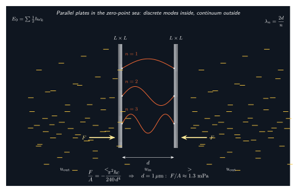

真空里真的没有光吗?
上一节我们终于把"光是波还是粒子"这个古老对立缝合成一条统一的叙事: 在量子电动力学 (QED) 里, 既不存在一个独立的"波", 也不存在一个独立的"粒子", 只有电磁场这个量子场. 但这一步走得还不够远. 因为如果真的接受"光就是电磁场的量子激发", 那就必须接受一个比波粒二象性更刺激的结论: 即使没有一颗光子, 场本身也并非静止的零.
这就是本书最后一站要追问的. 经典物理里, 真空的定义是"什么都没有的区域": 没有粒子, 没有辐射, 场强处处为零. 电磁能量密度 $u = \tfrac12(\varepsilon_0 E^2 + B^2/\mu_0) = 0$. 但量子力学告诉我们, 一个简谐振子的能量不可能真的为零 — 哪怕是基态, 也有 $\tfrac12\hbar\omega$ 的剩余能量. 而电磁场, 在每一种模式 (每一个波矢 $\mathbf k$、每一种偏振) 上都等价于一个简谐振子. 把所有模加起来, 真空便不再是零.
这听起来像无害的零点算术, 但它有两条硬梆梆的实验后果: Lamb 的能级移位 (1947) 与 Casimir 的平板吸引 (1948 预言, 1997 精确测量). 这两条加起来告诉我们: 真空不是容器, 真空是演员.
一、简谐振子的零点能, 搬到电磁场上
先从一维量子简谐振子开始. 哈密顿量 $\hat H = \hat p^2/(2m) + \tfrac12 m\omega^2 \hat x^2$, 用升降算符 $\hat a, \hat a^\dagger$ 改写为 $\hat H = \hbar\omega(\hat a^\dagger \hat a + \tfrac12)$. 粒子数算符 $\hat N = \hat a^\dagger \hat a$ 的本征值是非负整数, 基态 $|0\rangle$ 对应 $N = 0$, 但能量并不是零:
$$ E_0 = \frac{1}{2}\hbar\omega. \tag{1} $$
为什么基态不能有零能量? 因为 $\hat x$ 和 $\hat p$ 不对易: $[\hat x, \hat p] = i\hbar$. 若 $\langle \hat x^2 \rangle$ 与 $\langle \hat p^2\rangle$ 都为零, 则位置和动量同时严格确定, 违反不确定性原理. 于是系统必须在两者之间分摊一份最小的"抖动", 这份抖动正对应 $\tfrac12\hbar\omega$.
现在把这件事搬到电磁场上. 在一个体积 $V$ 的盒子里, 电磁场按波矢 $\mathbf k$ 与偏振 $\lambda \in \{1,2\}$ 展开, 每一个模都是独立的简谐振子, 频率 $\omega_{\mathbf k} = c|\mathbf k|$. 整个场的哈密顿量为:
$$ \hat H_{\mathrm{EM}} = \sum_{\mathbf k, \lambda} \hbar\omega_{\mathbf k}\left(\hat a^\dagger_{\mathbf k\lambda}\hat a_{\mathbf k\lambda} + \tfrac12\right). \tag{2} $$
基态即"真空态" $|0\rangle$, 满足 $\hat a_{\mathbf k\lambda}|0\rangle = 0$, 但它的能量是每个模 $\tfrac12\hbar\omega_{\mathbf k}$ 的无穷求和 — 形式上发散. 这个发散常常令人不安, 但我们先按住它: 物理上可观测的永远是两个状态之间的能量差, 或者梯度之差, 不是绝对的零点. 发散是"基准线"的发散, 只要差是有限的, 实验就能见到.
"虚光子"的图像由此而来. 基态里不断有 $\hat a^\dagger \hat a$ 那种短暂的涨落: 一对光子从真空中涌现, 存在 $\Delta t$, 然后又湮灭回去. 能量守恒在平均意义下依然严格成立, 但在 $\Delta t$ 这个时间窗口里, Heisenberg 不确定性允许短暂借走 $\Delta E \sim \hbar/\Delta t$ 的能量. 换句话说, 真空不是"死静", 而是一片持续"嗡嗡作响"的涨落海.
这份海浪是有实验后果的. 1947 年, Lamb 与 Retherford 发现氢原子 2S 与 2P 能级并不严格兼并, 相差约 1058 MHz — 远超 Dirac 方程的预言. Bethe 意识到, 这份移位来自电子被真空中的虚光子 "撞" 所引起的位置涨落, 相当于电子在不停地颤动, 它 "感受" 到的 Coulomb 势被略微平滑了. 这正是量子电动力学 (QED) 第一次定量上击败古典场论的地方, 也是整个 20 世纪后半叶场论建模的起点.
二、Casimir 1948: 把两块金属板塞进零点海
Casimir 在 1948 年问了一个极为漂亮的问题: 如果真空中存在零点场, 那么两块平行导体板之间的场应该与板外不同 — 因为导体边界把电场切向分量强制设为零, 板间只允许那些驻波模, 即 $\lambda_n = 2d/n$, $n \in \mathbb{N}^+$. 板外还是连续谱. 零点能密度因此两边不等, 系统为降低总能量会让板彼此吸引.

具体推导会碰到前面提到的发散, Casimir 的手艺是: 用指数截断 $\mathrm{e}^{-\omega/\omega_c}$ 把高频过滤掉, 分别算板间与板外的零点能密度, 相减, 再把截断拿走. 发散刚好抵消, 留下一个漂亮的有限值. 对两块理想导体板, 单位面积吸引力为:
$$ \frac{F}{A} = -\frac{\pi^2 \hbar c}{240\, d^4}. \tag{3} $$
这个公式之简洁让人肃然起敬: 只有 $\hbar$、$c$、几何因子 $\pi^2/240$ 和间距 $d$ 的四次方. 没有金属的电导率, 没有温度, 没有任何材料参数 — 在理想极限下, 它纯粹是真空本身在发言.
代入数字看有多大. 取 $d = 1~\mu\mathrm{m}$:
$$ \frac{F}{A} = -\frac{\pi^2 \cdot (1.055\times10^{-34}) \cdot (3\times10^{8})}{240 \cdot (10^{-6})^4} \approx -1.3\times10^{-3}~\mathrm{Pa}. $$
1.3 mPa — 比一张纸搁在手上的重量还轻得多. 但由于 $F/A \propto d^{-4}$, 它随间距缩小迅猛抬升: $d = 100~\mathrm{nm}$ 时, 压强放大 $10^4$ 倍, 达到 $\sim 13$ Pa. 到了 10 nm 级别就超过一个大气压的千分之一了 — 这正是 MEMS 微机电器件里 "悬臂自己贴到基板" 现象的物理根源, 工程师把它视为一个讨厌却不可避免的背景力.
这里我们做本节第一次极限检验. 公式 (3) 的两个极限告诉我们什么?
- $d \to \infty$: $F/A \to 0$. 板拉得无限开, 板间的模也变成连续谱, 与板外一致, 两边零点能密度相等, 力消失. 物理直觉成立.
- $d \to 0$: $F/A \to -\infty$. 这看起来荒谬, 但它只是理想化极限: 真实金属的等离子体频率 $\omega_p$ 把高频模式过滤掉, 当 $d$ 小于等离子体波长 (约 100 nm 量级) 时, 修正不可忽略. Lifshitz 1956 给出完整的任意介电函数推导, 把这个"发散"治成合理的有限值.
实验验证走了近半个世纪. 1958 年 Sparnaay 在飞利浦实验室首次做出初步观察, 但误差大, 只能说 "与 Casimir 理论兼容". 1997 年 Lamoreaux 用扭转天平在 0.6–6 μm 间距上测到 5% 精度的吻合. 1998 年 Mohideen 与 Roy 用微悬臂在 100 nm 级别把误差压到 1% 以内. 至此, "真空带有能量" 已不再是思辨, 而是可以逐条数字核对的物理事实.
三、动态 Casimir、Unruh 与 Hawking: 把真空摇醒
静止的镜子把真空的零点能分成两块, 板受到吸引. 那如果让镜子动起来会怎样? 1970 年 Moore、Fulling-Davies 等人指出, 快速加速的镜子会把虚光子"甩出来"成为真实光子 — 这就是动态 Casimir 效应 (Dynamical Casimir Effect, DCE). 直观上, 镜子的边界条件在时间上变化, 场的模要不断重新"整队", 这种非绝热过程会把零点涨落压缩到某些模上形成真正可观测的辐射.
问题是要让机械镜子达到接近光速的加速度才能出可测的光子数, 工程上几乎不可能. 2011 年 Wilson 及合作者绕过了这个困难: 他们在超导微波腔的一端放一块 SQUID, 通过磁通调制 SQUID 的有效电感, 等效地让"电长度"以约 25% 光速的速率振荡. 这在微波尺度下相当于镜子以接近光速加速. 结果是清晰的: 腔里检出与预测符合的光子热谱, 证实 DCE 的存在. 真空被轻轻一摇, 就往外吐了几个光子.
把"加速"这件事推广到观察者而非镜子, 故事变得更哲学. 1976 年 Unruh 证明: 一个以恒定固有加速度 $a$ 运动的观察者, 不会像惯性观察者那样把真空看成零温, 而会看成一个温度为 $T$ 的热浴:
$$ k_B T = \frac{\hbar a}{2\pi c}. $$
这个公式告诉我们, 对于一个处在地球表面的观察者 ($a \approx 9.8~\mathrm{m/s^2}$), "见到的" 真空温度约为:
$$ T \approx \frac{(1.055\times10^{-34}) \cdot 9.8}{2\pi \cdot (3\times10^{8}) \cdot (1.38\times10^{-23})} \approx 4\times10^{-20}~\mathrm{K}. $$
这是一个完全不可测量的数 — 宇宙背景辐射是 2.7 K, 比 Unruh 温度高 $10^{19}$ 倍. 要让 Unruh 温度达到 1 K, 需要约 $10^{20}~\mathrm{m/s^2}$ 的加速度. 但 Unruh 效应的意义不在实验, 而在概念: 它说"真空"根本不是观察者无关的概念. 不同的参照系会"看到"不同的粒子数, 因为"模式"的划分 (什么算向上传播的波, 什么算向下) 与参照系绑定.
Hawking 1974 年把同样的思路放到黑洞视界上. 视界附近, 一对虚光子被潮汐引力场分成两半: 一颗落进视界再也出不来, 另一颗逃到无穷远 — 后者就是 Hawking 辐射的光子. 外部观察者看到黑洞像一个温度为 $T = \hbar g/(2\pi c k_B)$ 的黑体在发光 ($g$ 为视界处的表面引力). 对一个太阳质量黑洞, 这温度约 $6\times10^{-8}$ K, 比宇宙背景还冷, 所以只能在原初小黑洞或强化的类比实验里勉强追踪. 但概念框架又一次与 Unruh 遥相呼应: 把真空放到强场或强加速的处境里, 它会乖乖地以热谱把自己交出来.
三个效应连起来看, 有一个共同底色: 真空是一个"以场的方式存在"的东西, 谁用怎样的边界、怎样的运动去问它, 它就以怎样的粒子谱回答. Casimir 问静止的边界, 得到吸引力; DCE 问运动的边界, 得到实光子; Unruh 问加速的观察者, 得到热浴; Hawking 问黑洞的视界, 得到辐射. 四种提问, 一个回答: 真空不是"空", 是一切.
四、真空能、宇宙学常数与这本小书的收束
把公式 (2) 里的所有模 $\tfrac12\hbar\omega_{\mathbf k}$ 机械求和, 得到的真空能量密度是发散的. 即使引入 Planck 尺度的紫外截断 $\omega_c \sim M_P c^2/\hbar$, 估出来的真空能量密度约 $10^{114}~\mathrm{J/m^3}$. 但 Einstein 方程告诉我们, 真空能量会以宇宙学常数 $\Lambda$ 出现在右边, 驱动宇宙加速膨胀. 1998 年对超新星的观测给出了确实不为零的 $\Lambda$, 其对应的能量密度只有约 $10^{-9}~\mathrm{J/m^3}$ — 与理论估计差 $10^{120}$ 倍. 这是物理学史上最大的一次理论预言与观测之间的不吻合, 被称为 "宇宙学常数问题", 至今没有令人信服的解答.
一个诚实的研究者在这里要承认: 我们对"真空是什么"只触到了皮. Casimir 效应存在, Lamb 位移存在, Hawking 辐射原则上存在 — 这些都没有问题; 真空有结构、会涨落、会在加速下显身, 这是 QED 的坚实基石. 但若把这些零点能一丝不苟地求和下去扔回 Einstein 方程, 得到的宇宙会在万分之一秒内膨胀消散. 问题出在哪里? 是零点能不应简单"引力化"? 是背景几何的定义本身需要重写? 是存在某种自然的抵消机制? 弦论、圈量子引力、emergent gravity 各自给出不同假设, 但都尚无实验判决.
这是我们这本书能停下来的一个自然位置. 整整二十节, 从第一节"光为什么走直线"到此刻, 我们沿着一条螺旋阶梯一层层深入:
- 第一部分里, 光是射线: Fermat 原理给出 Snell 定律, 折射、彩虹、弯曲, 都从"路径取极值"得来, 但最后我们被一个问题堵住 — 射线为什么走极值?
- 第二部分里, 光是波: Huygens-Fresnel 原理回答了上一个问题, 干涉、衍射、极限分辨率、偏振、激光, 都是波动的后果. 但波又是什么在波动?
- 第三部分里, 光是场的传播: Maxwell 方程推出 $c = 1/\sqrt{\varepsilon_0\mu_0}$, 相速度与群速度被分开, 辐射压被量化, 甚至太阳常数被用来计算地球能量预算. 但场又是什么?
- 第四部分里, 场是量子激发: 黑体辐射逼出 $h$, 光电效应逼出光子, Compton、Planck、量子随机过程让光呈现粒子面, 最终以波粒二象性缝合成 QED. 而此刻, 我们看到"场"本身就是一个带零点的振动海.
每一层都不是错的, 也不是对的 — 它们是同一个对象在不同尺度、不同问题下的有效投影. 射线是短波长极限下的波; 波是低能极限下的场; 场是未探明更深结构下的量子. 我们永远不能用其中一幅图像穷尽"光是什么"这个问题, 因为每一幅图像都在其自身的适用边界内成立, 越过边界便退化为下一层更基础的描述的近似. 这正是 QED 的姿态, 也是整个现代物理对"什么是基本"这件事的态度: 一个理论的意义不在于它是否"终极", 而在于它准确给出在多大范围内的哪些可观测量.
如果非要用一句话回答 "光是什么", 我会这样说: 光是电磁场的量子激发, 电磁场是一个在时空上延展、在基态也抖动的场, 而这个场很可能只是更深层理论 — 也许是弦、也许是圈、也许是尚未发明的概念 — 的一个低能有效近似. 二十节走下来, 我们并没有抓住光的本质; 我们只是给出了一串越来越精确的近似, 每一个都经受住了这本书所用到的实验. 剩下的留给下一代的物理学家 — 也许是你. 正如 Feynman 曾说, 科学是"一种可以被下一次实验证伪的信仰", 我们对光的理解也同样. 好在: 每一层近似都是美丽的, 而且都能算出数字.
小结
本节把"真空"从经典的零还原成量子场的基态: 每个 EM 模都是简谐振子, 零点能 $\tfrac12\hbar\omega$ 的无穷求和构成一个持续涨落的"虚光子海". Lamb 位移 (1947) 是这片海在原子能级上的第一份签名; Casimir 效应 (公式 3, 1948 预言, 1997 Lamoreaux 精确测量) 把两块平行板之间的零点模强制离散化, 得到一条纯粹由 $\hbar$、$c$ 与间距决定的吸引力 — 在 $d = 1~\mu$m 时 1.3 mPa, 100 nm 时 13 Pa. 动态 Casimir、Unruh (地球表面 $10^{-20}$ K, 不可测但概念颠覆)、Hawking 辐射则把这份涨落放到运动或强引力场里, 以热谱显身. 真空不是空, 真空是演员.
这是二十节的最后一站, 也是整册"光是什么"的收束. 我们从费马的直线出发, 经过波动、麦克斯韦、量子, 走到真空零点场, 沿途每一层都能给出一个具体可算的答案, 却没有任何一幅图像能完全独占这个对象. QED 把粒子与波缝在场里, 而场本身可能只是更深层理论的近似 — 宇宙学常数 $10^{120}$ 的差距正在那儿戳着我们, 提醒这本小书远未讲完光的全部故事. 但二十个角度合起来, 至少给出了一个诚实的答案: 光是一个层层递进、永远无法被单一图像捕捉的对象; 而这种"不能被捕捉"本身, 或许就是它最深的本质.
▲